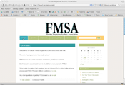
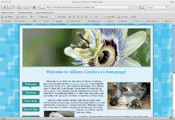
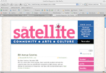

Florida Magazine Student Association
Fall 2008
I created this site on a Wordpress.com blog so future officers would be able to update the site without having to know XHTML coding. However, I designed it to look as much like a Web page as I could.

Fall 2008
This site was designed to teach people how to create logos in Photoshop, even if they had never used the program before. I created this site as my final project for my Communication on the Internet class.

Fall 2008
This is a site about me, my hobbies, traveling to New York and my traveling tips that I created for my Communication on the Internet class.

March 2008 to January 2009
Each month I uploaded the magazine's content to the Web site, including pictures. I also organized the Music, Archives and Columns sections to make navigation through content easier for viewers.

Miscellaneous pages I coded while taking Advanced Web Design at the University of Florida.
- Abe Lincoln
- Working with images.
- Page with Buttons
- Testing buttons and CSS.